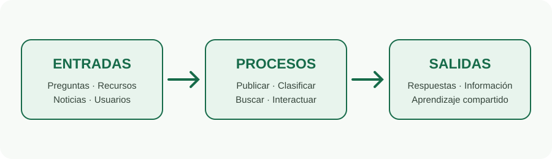

Entradas
- Preguntas y respuestas
- Noticias y eventos
- Documentos y enlaces
- Datos de usuarios
Procesos
- Crear publicaciones
- Clasificar y buscar
- Comentar y reaccionar
- Guardar contenidos
Salidas
- Información organizada
- Respuestas a inquietudes
- Recursos disponibles
- Aprendizaje compartido
Componentes
- Usuarios e interfaz
- Feed de publicaciones
- Preguntas y recursos
- Almacenamiento local del prototipo
Entorno
- Universidad
- Estudiantes y docentes
- Comunidad académica
- Internet y dispositivos
Retroalimentación
- Comentarios
- Reacciones
- Preguntas frecuentes
- Mejoras según pruebas
En el prototipo entregado, las interacciones se almacenan localmente en el navegador. Una versión de producción requeriría backend, base de datos, autenticación, políticas de privacidad y almacenamiento de archivos.